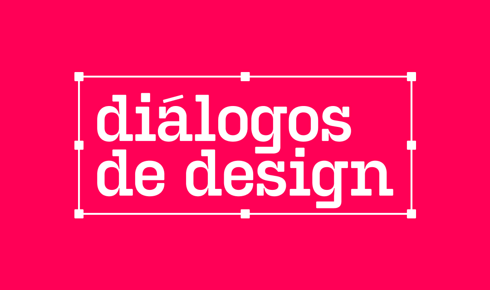

David HerdeiroBack to the beginningDiálogos de Design: A Community Project
Where I live, we have two major design events, and they are great. They bring great speakers presenting awesome
content in incredible venues, but they are still laking something: Community representation and local focus.
So, an idea was born. I wanted to create a design event that was focused on the local community. This means
face-to-face interaction with people that understand our needs, that fights our battles and that can be part of
our daily lives. Community events also mean that there's no corporate-selling, no
my-company-is-better-than-your's, no hidden goals:
It's people talking to people.
And so, Diálogos de Design was born.
I sent a
message to some friends — the type of person that goes along with all
my crazy ideas — and they were in. That's the most important part of something like this: Doesn't matter how
skillfuly the team is, what matters is how much they are willing to get stuff done, they are open to learn new
things, and that they believe in your vision.

Diálogos de Design logotype. Typeface kindly offered by Tudotype Foundry, an awesome local type designer that
believed on the project and wanted to do something for the community! Thanks!
So far we've had three editions, all on the same year. This recorrent approach is important to us because it
allows people to maintain contact. We might be a somewhat small community, but if people only get the chance to
see each other once a year, it's hard to create a sense of belonging. So, we opted for the triannual/quarterly
approach.
Back to the beginning